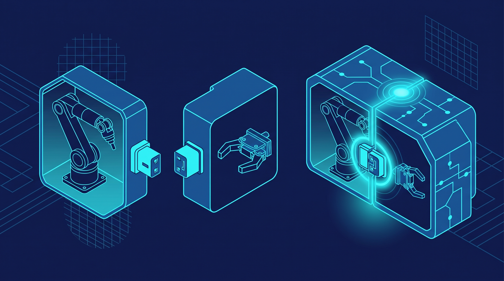
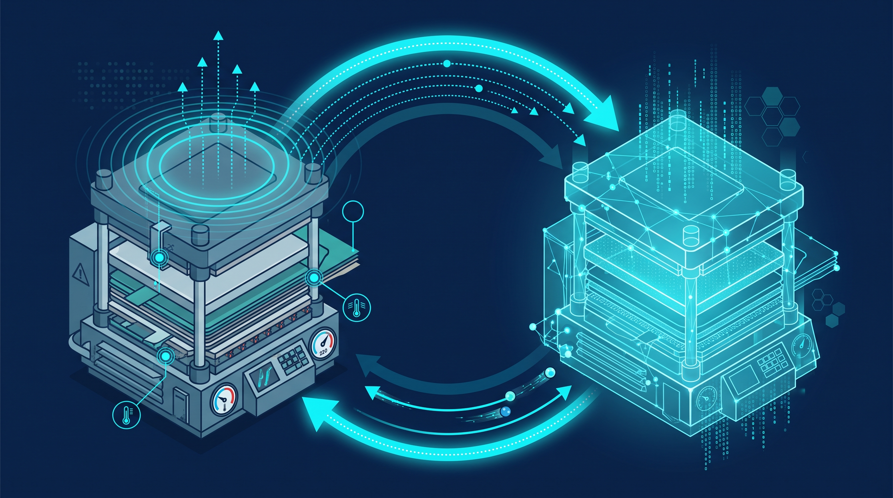
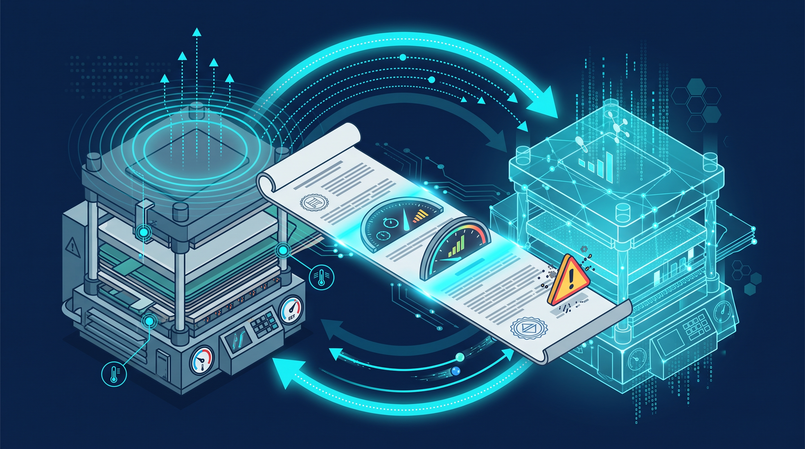

The Monolithic Digital Twin Is Dead: Composable Twins and Synchronization Contracts
For a decade, the standard playbook was simple: pick a factory, scan it, and pour the entire thing — every robot, conveyor, and curing oven — into one enormous digital twin. It made for a beautiful dashboard. Then the line changed, a station got reconfigured, and the beautiful dashboard quietly rotted. The twin no longer matched reality, nobody trusted it, and the maintenance bill to fix it exceeded the budget of the original build.
This is the moment the industry is waking up to: the monolithic digital twin is dead. What replaces it is not a bigger model, but a composable one — and a contract that keeps the pieces honest.
The monolith falls out of sync within months
A digital twin is supposed to replicate the dynamic behavior of physical assets, processes, and systems in virtual space, combining real-time data with physics-based models. The ambition was always right. The architecture was wrong. Modeling an entire factory or line as a single giant model produces two predictable outcomes: maintenance costs that scale with everything at once, and reusability that approaches zero.
In manufacturing environments where equipment and processes change constantly, a monolithic twin falls out of sync with reality within months of deployment and decays into un-updatable technical debt. The lesson from the field, captured sharply in the weekly digital-twin analysis column at IFAC, is blunt: the era of the monolithic twin is over, and the core engineering challenge has shifted to something much less glamorous than 3D rendering — the synchronization design contract.
Compose the arm and the gripper, then compose the line
The alternative is the composable twin: build small, well-defined components and assemble them through standardized interfaces. NIST researchers demonstrated the technique on the ISO 23247-6 standard framework: the robot-arm twin and the gripper twin are built as independent components, then composed into the higher-level integrated system through standardized I/O interfaces. Swap the gripper, and you swap one component — not rebuild the factory model.

This is not a cosmetic change. A composable architecture radically lowers reconfiguration and maintenance cost because change propagates only where the interface contract says it may. Standardized I/O interfaces turn the twin from a bespoke sculpture into a bill of materials. When the line is reconfigured for a new product, the twin is reconfigured the same way the line is: piece by piece.
From passive dashboards to closed-loop control
Composable is only half of the story. The other half is the technical leap that separates today's twins from yesterday's dashboards: adaptive closed-loop twins that reverse-control process parameters in real time, instead of merely visualizing them.
GE Vernova's Advanced Research center, together with the University of Delaware, built exactly this for carbon-fiber-reinforced polymer (CFRP) composite manufacturing. Ultrasonic and fiber-optic sensors feed real-time process monitoring; physics-based numerics and machine-learning surrogate models predict resin flow and curing behavior live; and the twin autonomously adjusts temperature and pressure parameters in response. The result is not a nicer screen — it is composite defect rates suppressed at the root, by a twin that acts, not one that watches.

The market numbers tell the same story about where the value is moving. The U.S. digital twin technology in manufacturing market is being driven by closed-loop and lifecycle applications, not visualization. The twin's job description has changed: from showing the process to steering it.
The plant that is validated before it exists
Composition also changes when a twin is born. Canada's Rock Tech Lithium contracted Siemens Canada to build a digital process twin covering the full lifecycle of its Red Rock lithium hydroxide converter plant — from feasibility studies through detailed engineering, plant construction, and live operation. Chemical process reactions, energy flows, and fluid movement are validated virtually with physics-based models long before steel is erected, minimizing large CAPEX risk and pre-optimizing process efficiency, as reported by Mining Weekly.
This lifecycle pattern is becoming a settled methodology at the largest sites. NVIDIA released the Omniverse DSX Blueprint for next-generation AI factories on the Omniverse platform and the OpenUSD (Universal Scene Description) standard. Foxconn's Texas plant and Lockheed Martin's Alabama interceptor-missile facility now complete production-line layout validation, equipment interference checks, and autonomous mobile-robot logistics path simulation in physically accurate virtual environments before the physical line is built. The factory is built twice — once in simulation, once in steel — and the order matters.
The contract nobody wants to sign
Here is where the industry's marketing breaks down. Many vendors hide behind the vague phrase "real-time sync." It sounds precise and means nothing. Architecturally, you must define update cadence, maximum acceptable latency, and the behavior of the twin when data is late, missing, or stale — as explicit contracts, not as aspiration.

A twin built without a synchronization contract is just graphics. That is the hard line from the IFAC column: without explicit synchronization terms, a twin can never serve as the control basis for industrial AI agents. An agent that actuates through a twin needs to know exactly how fresh its world model is and what to do when freshness guarantees break. "Real-time" is a marketing word; a latency budget is an engineering artifact.
What this means for engineers building twins now
Three practical consequences follow. First, stop modeling at the factory scale and start modeling at the component scale, behind standardized interfaces — ISO 23247-6's composable framework shows the shape of it. Second, design for closed loops from day one: if your twin cannot write back to the process, like the GE Vernova composite twin does, you are building a dashboard with extra steps. Third, write the synchronization contract before the first model is built: update cadence, latency bounds, and stale-data behavior, documented and enforced.
The monolithic twin died because it could not change. The composable twin survives because it can. And the synchronization contract is what keeps it truthful — the difference between a twin that is graphics and a twin that is a control basis for the industrial AI agents now arriving on the factory floor.